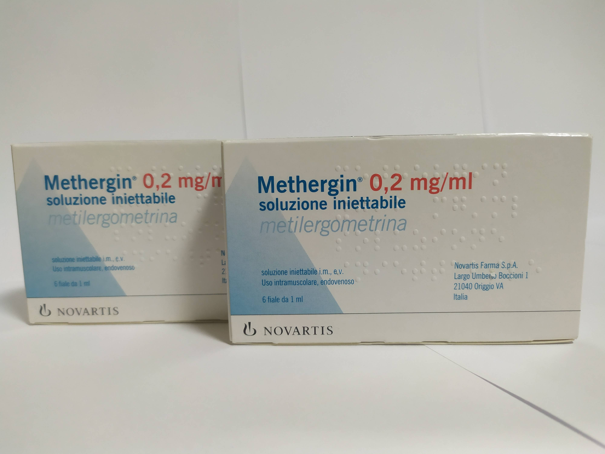

Контактна інформація:
Ціна: 500 грн/уп.
В наявності
Виробник: Італія
6 ампул в упаковці!Ціна: 500 грн/уп.
В наявності
Саме в FarmItal ви можете купити купити метергін-(метілeргометрін)
/ methergin(metilergometrina) в Україні, Гарантовано Якісний!
Доставка Methergin(Metilergometrina) здійснюється транспортними компаніями, терміни виконання замовлення обумовлюються менеджером Фармітал. Ви можете замовити Метергін-(Метілeргометрін) у містах: Одеса, Херсон, Чернігів, Сєверодонецьк, Бердянськ, Бровари, Дніпро, Вінниця, Київ, Слов'янськ, Полтава, Краматорськ, Біла Церква, Кам'янське, Маріуполь, Чернівці, Олександрія, Кам'янець-Подільський, Львів, Запоріжжя, Кропивницький, Житомир, Івано-Франківськ, Суми, Черкаси, Костянтинівка, Мелітополь, Кривий Ріг, Рівне, Луцьк, Нікополь, Павлоград, Ужгород, Кременчук, Лисичанськ, Хмельницький, Тернопіль, Харків, Миколаїв, а також в інших населених пунктах України.
Упаковка,яка містить 6 ампул розчину, а саме:
р-н для ін'єкцій, 0,2 мг/мл по 1 мл в амп.
напівсинтетичне похідне природного алкалоїду ріжків (ергометрину), підвищує тонус та скоротливу активність біометрію, виявляє слабку дію на периферичні судини, практично не підвищує АТ.
другий період пологів (після появи передньої частини плеча плода), третій період пологів, атонічні маткові кровотечі; субінволюція матки, лохіометра; профілактика і лікування гіпотонічних кровотеч у ранньому післяпологовому періоді.
при активному проведенні другого періоду пологів вводять в/в 0,1-0,2мг (0,5-1мл) метергіну після появи передньої частини плеча плода; для пологів в умовах загального знеболювання рекомендується введення 1 мл метергіну; при атонічній матковій кровотечі призначають 0,2 мг в/м або 0,1-0,2мг в/в, при необхідності ін’єкції можна повторювати з інтервалом у 2 год; при терапії субінволюції матки, лохіометри - 0,1-0,2мг (0,5-1мл) п/ш або в/м до 3 р/добу; при кесаревому розтині вводять після витягання плоду – в/в по 0,05-0,1мг або в/м по 0,2мг; при абортах призначають після розширення каналу шийки матки в/в 0,1-0,2мг; при спонтанних абортах показано в/в 0,05-0,1мг.
Самолікування може бути шкідливим для вашого здоров'я! Перед початком лікування зверніться до вашого лікаря!!
абдомінальні болі, нудота, блювання, підвищене потовиділення, запаморочення, головний біль, АР у вигляді шкірної висипки; АГ, брадикардія чи тахікардія, спазм периферичних судин; зниження секрецію молока; рідко - анафілактичний шок.
Зберігати у недоступному для дітей місці при температурі не вище (до +15°С).